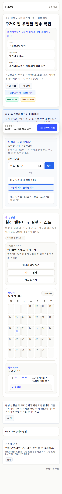
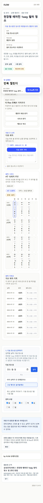
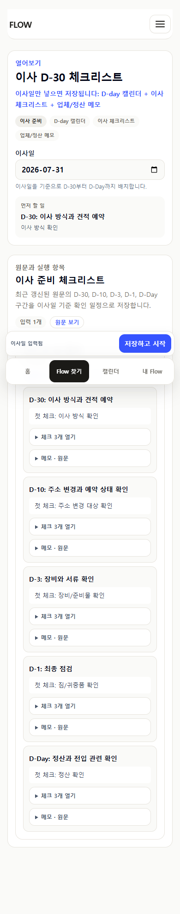
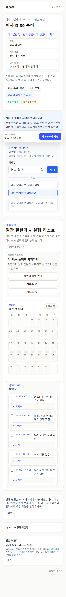
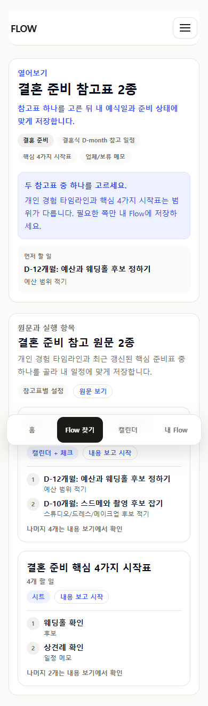
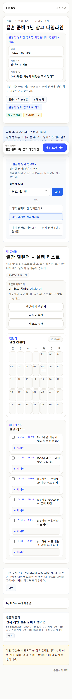
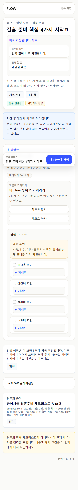
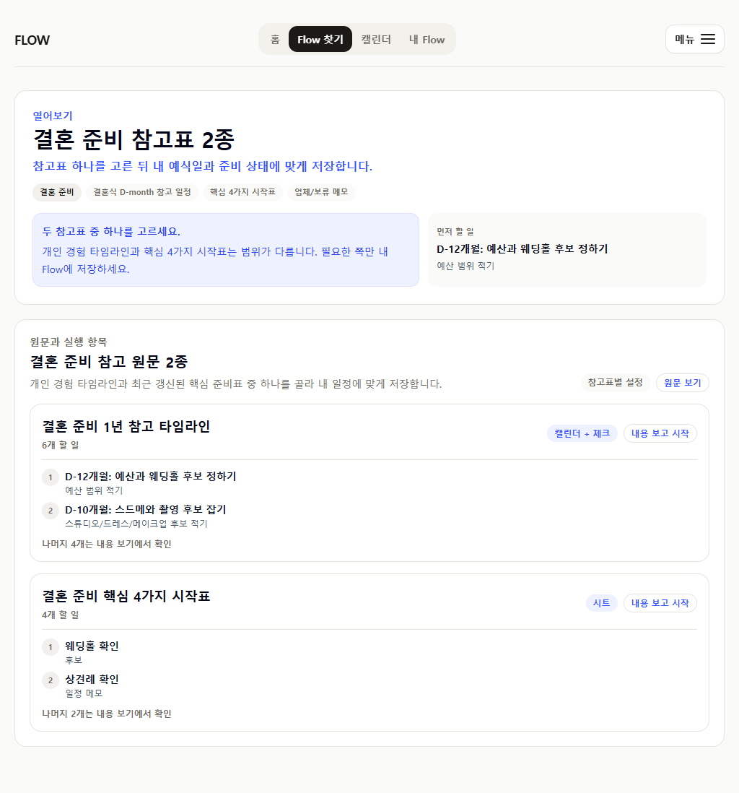

2026-07-12 · source currentness review
열리는 페이지와
현재 쓸 수 있는 내용은 다릅니다
다섯 공개 Flow를 게시일, 원문 수정일, 오늘 재확인, 현재 실행 범위로 나눠 감사했습니다. 오래됐다는 이유만으로 삭제하지 않고, 최근 수정됐다는 이유만으로 전체 내용을 자동 승인하지도 않았습니다.
5재확인한 공개 Flow
2수정일 메타가 있는 원문
1게시일을 알 수 없는 공식 서비스
0결혼 Map 전체 저장 CTA
판정표
| Flow | 게시 | 수정 | 오늘 확인 | 현재 유지 범위 |
|---|---|---|---|---|
| 우편물 이전 | 알 수 없음 | 알 수 없음 | 2026-07-12 | 전입신고 다음날 공식 상태·결제 필요 여부 확인 |
| 천장형 1way 필터 | 2025-01-06 | 표시 없음 | 2026-07-12 | 정확한 모델의 청소·건조·장착·리셋 |
| AJD 이사 D-30 | 2024-05-17 | 2026-06-30 | 2026-07-12 | 현재 원문의 다섯 D-day 구간 |
| 개인 결혼 타임라인 | 2024-07-20 | 표시 없음 | 2026-07-12 | 개인 경험의 여섯 기간 구분만 |
| 공여사들 결혼 가이드 | 2024-12-25 | 2026-02-10 | 2026-07-12 | 15개 중 핵심 4가지 시작표 |
핵심 제품 결정
결혼 준비 Map은 두 자료를 모두 저장하지 않습니다.
개인 경험 타임라인과 최근 갱신된 핵심 시작표는 범위와 신뢰 방식이 다릅니다. 각 카드에서 앞 2개 항목만 보고 하나를 골라 해당 공개 Flow에서 저장합니다.
시나리오 화면








검증 한계
자동화, source HTML/metadata 재확인, 390px·1024px 스크린샷 검토를 수행했습니다. 실제 사용자 관찰 세션은 0건이며 외부 원문의 이후 변경은 다음 재확인 대상입니다.